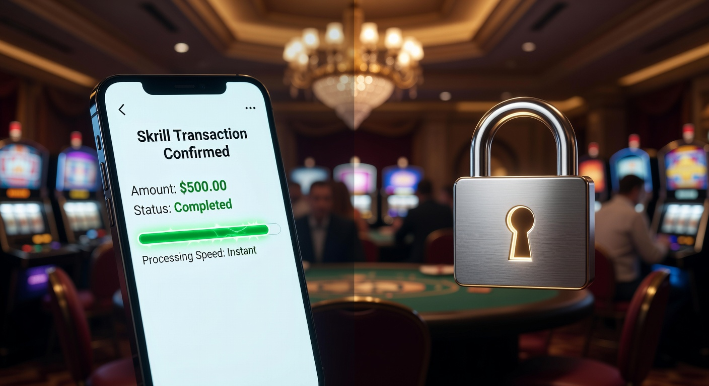
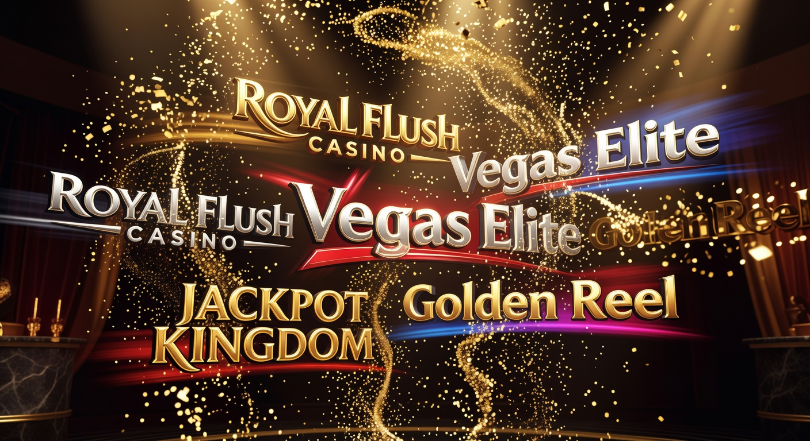
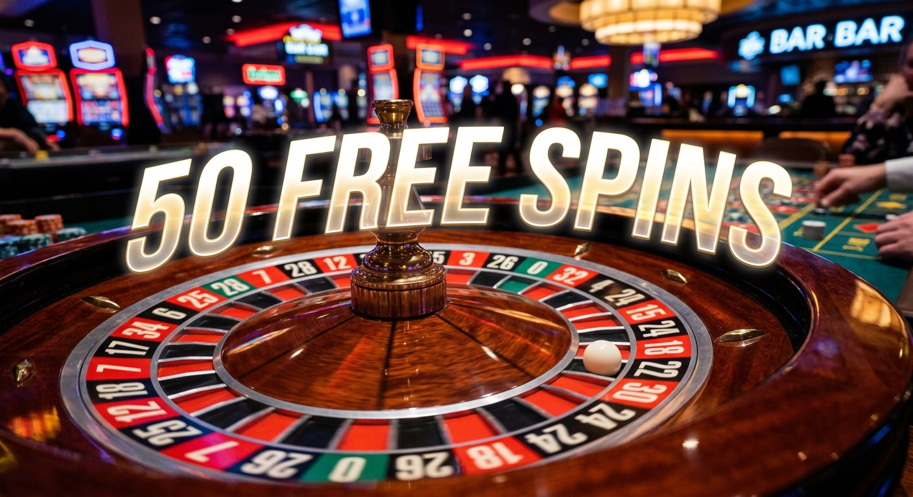
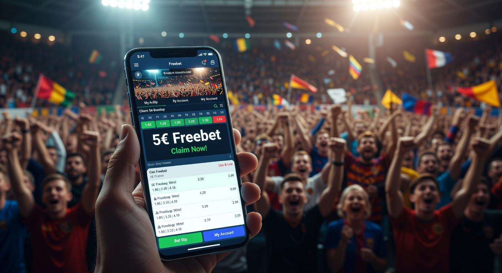

Guida completa ai migliori casino con skrill del 2026
Il panorama del gioco d'azzardo digitale in Italia ha raggiunto vette tecnologiche incredibili nel 2026. Tra le innovazioni più apprezzate dagli utenti troviamo l'integrazione sempre più profonda di portafogli elettronici avanzati. Scegliere un casino con skrill oggi significa affidarsi a uno standard di sicurezza e velocità che era impensabile solo pochi anni fa. Questo sistema di pagamento si è evoluto per offrire transazioni istantanee, protezione dei dati biometrici e una gestione del budget impeccabile.
In questo articolo, esploreremo le ragioni per cui migliaia di giocatori italiani preferiscono utilizzare questo portafoglio elettronico per le loro sessioni di gioco. Analizzeremo i vantaggi competitivi, le migliori piattaforme disponibili e come massimizzare i vantaggi derivanti dall'uso di questo strumento. Se state cercando un'esperienza di gioco fluida e sicura, capire come funziona un casino con skrill è il primo passo fondamentale per navigare nel mercato odierno.
La tecnologia dei pagamenti digitali nel 2026 non riguarda solo il trasferimento di denaro, ma l'intero ecosistema di intrattenimento. Molte piattaforme offrono ora programmi fedeltà integrati direttamente con il vostro account di pagamento. Per chi desidera iniziare con budget contenuti, è possibile consultare guide specifiche come quella sui casinò non aams deposito 5 euro per trovare opzioni accessibili e sicure che supportano i portafogli elettronici moderni.
Perché scegliere un casino con skrill oggi?
Nel 2026, la velocità è diventata la valuta principale del web. Un casino con skrill offre il vantaggio innegabile di eliminare i tempi di attesa tipici dei bonifici bancari o delle verifiche manuali delle carte. Quando effettuate un deposito, i fondi sono immediatamente pronti sul vostro conto di gioco, permettendovi di accedere subito alle vostre slot preferite o ai tavoli live di Evolution Gaming senza interruzioni fastidiose.
Inoltre, la privacy è un pilastro fondamentale per i giocatori contemporanei. Utilizzare questo metodo di pagamento permette di mantenere i dettagli bancari privati, fungendo da cuscinetto tra la vostra banca e il portale di gioco. Questo livello di anonimato tecnico, unito alla licenza ADM (ex AAMS), garantisce che ogni transazione sia monitorata e protetta dai più alti standard di crittografia attuali.
Molti utenti apprezzano anche la facilità di gestione tramite app mobile. Skrill ha lanciato nel 2026 nuove funzionalità di tracciamento delle spese dedicate al gaming, aiutando i giocatori a mantenere un comportamento responsabile. Per approfondire come questi strumenti si confrontano con altre soluzioni, potete leggere di più sul funzionamento di Skrill su fonti autorevoli che ne spiegano la storia e l'evoluzione tecnologica.
Come selezioniamo i migliori casino online
La nostra metodologia di valutazione per identificare i migliori casino skrill nel 2026 è rigorosa e basata su dati oggettivi. Non ci limitiamo a verificare la presenza del logo del portafoglio elettronico, ma testiamo personalmente ogni aspetto della piattaforma. La sicurezza è la nostra priorità assoluta, verificando che il sito possieda una licenza valida emessa dall'Agenzia delle Dogane e dei Monopoli o dalla Malta Gaming Authority.
Un altro fattore cruciale è la varietà della libreria dei giochi. Un ottimo casino con skrill deve collaborare con i leader del settore come NetEnt, Microgaming e Play'n GO. Analizziamo l'RTP (Return to Player) medio dei titoli offerti per assicurarci che i giocatori abbiano reali possibilità di vincita e un'esperienza equa. La qualità del software deve essere eccellente sia su desktop che su dispositivi mobili 5G.
Infine, valutiamo l'efficienza del supporto clienti e la trasparenza dei termini e delle condizioni. Spesso, chi cerca piattaforme flessibili valuta anche opzioni senza troppa burocrazia, come nel caso di un casino senza documenti, dove la velocità d'esecuzione è l'elemento che fa la differenza. Incrociamo questi dati con le recensioni degli utenti per fornire una classifica sempre aggiornata e affidabile.
Depositi e Prelievi: velocità e sicurezza

Effettuare depositi skrill casino è un'operazione che richiede meno di trenta secondi nel 2026. Grazie all'integrazione di API di ultima generazione, basta confermare l'operazione tramite l'app sul proprio smartphone, spesso utilizzando il riconoscimento facciale o l'impronta digitale. Questa fluidità è ciò che distingue un moderno casino con skrill dalle vecchie piattaforme che richiedono ancora l'inserimento manuale di lunghi codici numerici.
Il vero punto di forza, tuttavia, risiede nel prelievo immediato skrill. Mentre altri metodi possono richiedere da 3 a 5 giorni lavorativi, le piattaforme che abbiamo selezionato processano le vincite in tempo reale. Una volta approvata la richiesta dal dipartimento finanziario del casinò, i soldi appaiono sul vostro saldo digitale istantaneamente, pronti per essere spesi tramite la carta prepagata collegata o trasferiti sul conto corrente.
Ecco una tabella riassuntiva dei tempi medi nel 2026 per i principali strumenti:
| Metodo di Pagamento | Tempo Deposito | Tempo Prelievo | Commissioni Medie |
|---|---|---|---|
| Skrill | Istantaneo | 0-2 ore | 0% |
| Visa / Mastercard | Istantaneo | 1-3 giorni | 0.5% - 1% |
| PayPal | Istantaneo | 4-12 ore | 0% |
| Bonifico Bancario | 24-48 ore | 3-5 giorni | Variabili |
È importante notare che, sebbene Skrill sia estremamente veloce, alcuni utenti preferiscono soluzioni ancora più moderne e decentralizzate. In questi casi, un prelievo bitcoin casino potrebbe rappresentare un'alternativa valida per chi cerca la massima autonomia finanziaria e la tecnologia blockchain applicata al gioco.
I migliori brand consigliati nel 2026

Il mercato italiano offre diverse opzioni di eccellenza. Abbiamo selezionato sei brand che si distinguono per l'integrazione perfetta con i sistemi di pagamento digitali e per la qualità dell'offerta complessiva. Ogni casino con skrill menzionato di seguito è stato testato per affidabilità, bonus e catalogo giochi.
Millioner è una delle piattaforme più eleganti del 2026. Offre un'esperienza utente raffinata e una vasta gamma di slot ad alto RTP. Consigliamo vivamente Millioner per chi cerca un ambiente di gioco esclusivo e promozioni personalizzate basate sul proprio stile di gioco.
Se la vostra passione è il gioco dal vivo, Roulettino è la scelta ideale. Questo portale si concentra sull'offerta live, con croupier professionisti che parlano italiano e tavoli prodotti da Pragmatic Play. Potete provare l'emozione del tavolo verde su Roulettino, dove le transazioni sono sempre fulminee.
Per chi cerca innovazione e un'interfaccia futuristica, Wyns rappresenta l'avanguardia del 2026. La fluidità della loro app mobile è imbattibile, rendendo ogni sessione di gioco piacevole e priva di lag. Scoprite i vantaggi di Wyns visitando il loro sito ufficiale attraverso il nostro link dedicato.
Kinbet si distingue per l'integrazione tra scommesse sportive e casinò. È il luogo perfetto per chi ama diversificare il proprio intrattenimento senza cambiare piattaforma. La gestione del bankroll è semplicissima su Kinbet, grazie al supporto completo per tutti i portafogli elettronici principali.
Se amate le atmosfere fantasy e i programmi fedeltà avvincenti, Dragonia saprà conquistarvi. Ogni giocata permette di accumulare punti per sbloccare premi esclusivi. Unitevi all'avventura su Dragonia e approfittate dei loro bonus periodici riservati agli utenti Skrill.
Infine, Divaspin è il paradiso degli amanti delle slot machine. Con oltre 5000 titoli in catalogo, è impossibile annoiarsi. La sezione dedicata ai nuovi arrivati su Divaspin è particolarmente generosa e facile da attivare.
50 Free Spin Senza Deposito: le offerte del 2026

Una delle promozioni più ricercate nel 2026 è senza dubbio quella che regala giri gratuiti senza richiedere un versamento iniziale. Molti operatori che operano come casino con skrill utilizzano questa strategia per permettere ai nuovi utenti di testare la piattaforma. Ricevere 50 Free Spin Senza Deposito è un ottimo modo per esplorare le meccaniche di una nuova slot senza rischiare il proprio capitale.
Tuttavia, è essenziale leggere attentamente i requisiti di scommessa (wagering). Nel 2026, i migliori siti offrono requisiti equi, solitamente compresi tra 20x e 35x. Una volta completato il volume di gioco richiesto, le vincite possono essere prelevate utilizzando il vostro account digitale preferito. Questo tipo di bonus di benvenuto è spesso limitato a specifici fornitori di software come Pragmatic Play o NetEnt.
Spesso queste offerte sono temporanee e legate al lancio di nuovi giochi. Per chi desidera massimizzare queste opportunità, è consigliabile iscriversi alle newsletter dei casinò. Per una panoramica più ampia su dove trovare queste promozioni, potete consultare le sezioni dedicate ai casinò non aams deposito 10 euro, che spesso includono pacchetti di benvenuto molto competitivi per chi decide di fare un piccolo passo successivo al bonus gratuito.
5€ Freebet Senza Deposito - Immediato

Oltre ai giri gratuiti per le slot, il 2026 ha visto un aumento massiccio delle offerte dedicate alle scommesse sportive o ai giochi da tavolo. La 5€ Freebet Senza Deposito - Immediato è diventata uno standard per i portali ibridi. Questo credito può essere utilizzato per testare la sezione scommesse o magari per una giocata veloce al Blackjack o al Poker.
La caratteristica "immediata" è garantita dai nuovi sistemi di verifica dell'identità automatizzati. Non appena l'account viene creato e validato, il bonus appare nel saldo "bonus" del giocatore. È un incentivo eccellente per chi vuole provare l'ebbrezza della giocata reale senza alcun impegno finanziario preventivo. Molti siti che accettano questo approccio hanno visto un incremento della fedeltà degli utenti a lungo termine.
Queste freebet sono soggette a termini di utilizzo specifici, come una quota minima per le scommesse o una scadenza entro 7 giorni dall'attivazione. È uno strumento di marketing potente che nel 2026 viene gestito con estrema trasparenza, permettendo ai giocatori di divertirsi in modo consapevole e sicuro.
Registrazione e Verifica dell’Account
Nel 2026, registrarsi in un casino con skrill è un processo estremamente snello. Grazie all'integrazione con sistemi di identità digitale, molti passaggi che un tempo richiedevano ore ora avvengono in pochi secondi. La procedura standard prevede l'inserimento dei dati anagrafici e la scelta di una password sicura, spesso integrata con l'autenticazione a due fattori (2FA).
- Scegliete uno dei brand consigliati e cliccate sul tasto di registrazione.
- Compilate il modulo con i vostri dati o utilizzate lo SPID/CIE per un accesso rapido.
- Selezionate Skrill come metodo di pagamento predefinito durante la fase di setup.
- Caricate una foto del documento di identità se richiesto dal protocollo AAMS/ADM.
- Verificate l'email e iniziate a giocare con il bonus attivo.
La verifica dell'account è un passaggio obbligatorio per legge nel 2026 per prevenire il riciclaggio di denaro e proteggere i minori. Tuttavia, le tecnologie di riconoscimento ottico dei caratteri (OCR) permettono di convalidare i documenti quasi istantaneamente. Se preferite piattaforme con licenze internazionali diverse, potete consultare la lista dei siti casino curacao affidabili per opzioni con processi di verifica differenti ma altrettanto sicuri.
Bonus e promozioni nei casino con skrill
Le promozioni dedicate a chi utilizza questo portafoglio elettronico sono numerose e variegate nel 2026. Oltre al classico bonus di benvenuto, i giocatori possono beneficiare di offerte di Cashback settimanali, che rimborsano una percentuale delle perdite nette direttamente sul conto. Questo sistema è molto apprezzato dai giocatori abituali di Slot e giochi live.
Alcuni operatori offrono anche bonus specifici per chi effettua depositi skrill casino, come un incremento percentuale sul versamento o giri extra su una slot del mese. È importante però verificare sempre se il portafoglio elettronico è idoneo per l'attivazione del bonus primario, poiché in passato alcuni siti lo escludevano. Nel 2026, fortunatamente, questa limitazione è quasi del tutto scomparsa nei principali casinò italiani.
Un elemento distintivo delle promozioni moderne è la personalizzazione. Grazie all'intelligenza artificiale, il casino con skrill può proporvi offerte su misura basate sui vostri giochi preferiti, che si tratti di Poker o di titoli NetWin. La trasparenza rimane fondamentale: ogni bonus di gioco deve avere termini chiari e facilmente consultabili sul sito dell'operatore.
Confronto delle Migliori Slot del 2026
Il parco macchine digitale del 2026 è dominato da titoli con grafiche mozzafiato e meccaniche di gioco innovative. Le slot prodotte da NetEnt e Microgaming continuano a dettare gli standard, ma nuovi player si sono fatti strada con concetti basati sulla realtà aumentata. Giocare in un casino con skrill vi dà accesso a queste meraviglie tecnologiche con un semplice click.
Ecco alcune delle slot più popolari quest'anno:
- Starfield Quest: Una slot a tema spaziale con meccanica Megaways e un RTP del 97.5%.
- Roman Empire Live: Integra elementi di gioco dal vivo all'interno della struttura della slot.
- Cyber Cash: Prodotta da Pragmatic Play, offre jackpot progressivi istantanei.
- Ancient Egypt 2026: La rivisitazione di un classico con grafica in 8K e funzioni bonus interattive.
La scelta della slot giusta non dipende solo dal tema, ma anche dalla volatilità. Le slot ad alta volatilità offrono vincite meno frequenti ma di importo maggiore, ideali per chi ha un bankroll più consistente gestito tramite il proprio metodo di pagamento digitale. Al contrario, la bassa volatilità è perfetta per sessioni di gioco più lunghe e rilassate.
Licenza del casinò e sicurezza dei dati
La sicurezza non è mai troppa quando si parla di soldi reali. In Italia, l'unico ente che garantisce la legalità di un operatore è l'ADM (Agenzia delle Dogane e dei Monopoli). Un casino con skrill che espone il logo del timone è sinonimo di gioco onesto, fondi protetti e software regolarmente testati per garantire l'imparzialità dei risultati.
Oltre alla licenza nazionale, molti siti operano con la prestigiosa licenza della Malta Gaming Authority, riconosciuta a livello europeo per i suoi standard rigorosi. Nel 2026, la protezione dei dati è affidata a protocolli SSL di grado bancario e alla crittografia end-to-end. Questo assicura che né il casinò né terze parti possano intercettare le vostre informazioni personali durante le transazioni o le sessioni di gioco.
Ricordate sempre di giocare responsabilmente. Le autorità come ADM mettono a disposizione strumenti di auto-esclusione e limiti di deposito per aiutare a mantenere il controllo. La trasparenza sui tassi di vincita e sulla protezione del giocatore è ciò che distingue i migliori casino skrill dai siti poco affidabili che popolano le zone grigie del web.
Metodi di pagamento disponibili a confronto
Sebbene questo articolo si concentri sul casino con skrill, è utile avere una panoramica delle alternative disponibili nel 2026. Molti giocatori amano diversificare i propri strumenti finanziari a seconda delle esigenze del momento. La flessibilità è la chiave per un'esperienza senza stress.
Oltre a Skrill, troviamo spesso:
- Neteller: Simile a Skrill, spesso appartenente allo stesso gruppo societario, eccellente per il gaming.
- Paysafecard: Ideale per chi vuole utilizzare contanti per ricaricare un voucher fisico o digitale.
- PayPal: Il gigante dei pagamenti web, molto diffuso ma a volte con limiti più severi per il gioco d'azzardo.
- Visa e Mastercard: Le classiche carte che rimangono un pilastro per l'affidabilità universale.
Il confronto tra questi sistemi mostra come i portafogli elettronici vincano sulla velocità, mentre le carte di credito tradizionali offrano una maggiore accettazione globale. Tuttavia, l'evoluzione delle metodi di pagamento digitali nel 2026 ha reso le differenze sempre più sottili, con Skrill che ora offre anche carte fisiche e virtuali per spendere le vincite ovunque.
Pro
Utilizzare un casino con skrill nel 2026 comporta una serie di vantaggi indiscutibili che migliorano significativamente l'esperienza dell'utente. Il primo e più evidente è la velocità: i metodi di pagamento istantanei permettono di muovere il denaro tra diversi portali in pochi secondi, una caratteristica essenziale per i giocatori che amano cogliere al volo le migliori quote o promozioni lampo.
Un altro "pro" fondamentale è la sicurezza. Agendo come intermediario, Skrill evita che dobbiate condividere i dati della vostra carta di credito principale con ogni singolo sito di gioco. Questo riduce drasticamente il rischio di frodi informatiche. Inoltre, il programma fedeltà interno "Knect" permette di accumulare punti per ogni transazione effettuata, punti che possono poi essere convertiti in denaro o altri premi, aggiungendo valore ad ogni vostra giocata.
Infine, la gestione del budget è facilitata. Avere un conto dedicato esclusivamente al gioco permette di separare le spese quotidiane dall'intrattenimento, un principio base del gioco responsabile che ogni casinò online serio promuove attivamente nel 2026.
Contro
Nonostante i numerosi pregi, esistono alcuni piccoli svantaggi da considerare quando si sceglie un casino con skrill. Il primo riguarda le commissioni di ricarica del portafoglio elettronico. Sebbene depositare e prelevare dal casinò sia solitamente gratuito, trasferire fondi dal vostro conto bancario al wallet Skrill o viceversa potrebbe comportare dei costi fissi o percentuali che variano a seconda del metodo di trasferimento scelto.
Un altro aspetto riguarda l'esclusione occasionale da alcune promozioni. Sebbene sia un fenomeno in diminuzione nel 2026, alcuni casinò con licenza potrebbero ancora limitare l'accesso al bonus di benvenuto per chi utilizza determinati e-wallet, a causa di passati abusi del sistema. È quindi sempre fondamentale leggere le clausole scritte in piccolo prima di procedere con il primo versamento.
Infine, la necessità di mantenere un account aggiuntivo può essere vista come una complicazione da chi preferisce la semplicità estrema di una transazione diretta tramite banca. Tuttavia, per la maggior parte degli utenti IT nel 2026, questi piccoli "contro" sono ampiamente compensati dai benefici in termini di privacy e rapidità d'esecuzione.
Elettra d., recensioni e pagine tematiche
Nel contesto dell'analisi professionale dei casinò online in Italia, il nome di Elettra D. è diventato un punto di riferimento nel 2026. Le sue recensioni tecniche e le pagine tematiche offrono uno sguardo approfondito e imparziale su come le piattaforme gestiscono i pagamenti e la sicurezza degli utenti. Molti giocatori consultano il suo lavoro prima di decidere in quale casino con skrill investire il proprio tempo e denaro.
L'approccio di Elettra D. si distingue per l'attenzione ai dettagli tecnici, come la stabilità dei server durante le sessioni live di Evolution Gaming o la velocità di risposta del servizio clienti via chat. Le sue guide non si fermano alla superficie, ma analizzano i contratti di gioco per scovare eventuali clausole vessatorie, garantendo così una protezione reale per la community di giocatori italiani.
Le sue pagine tematiche sui metodi di pagamento sono particolarmente apprezzate per la chiarezza con cui spiegano le differenze tra le varie opzioni digitali. Seguire i consigli di esperti riconosciuti è un modo intelligente per navigare nel complesso mercato del 2026, assicurandosi di scegliere sempre operatori che accettano standard di qualità elevatissimi e offrono un ambiente di gioco equo.
Chi siamo
Siamo un team di esperti appassionati di tecnologia e gioco d'azzardo legale, attivi nel settore IT da oltre un decennio. La nostra missione nel 2026 è fornire informazioni accurate, trasparenti e aggiornate sui migliori casino skrill e sulle tendenze del mercato italiano. Crediamo fermamente che la conoscenza sia la migliore difesa per il giocatore, e per questo motivo dedichiamo centinaia di ore al test dei portali e dei sistemi di pagamento.
La nostra redazione è composta da analisti di dati, esperti di sicurezza informatica e copywriter specializzati nel settore del gaming. Non accettiamo compromessi sulla qualità e collaboriamo solo con brand che dimostrano integrità e rispetto per l'utente. Ogni articolo che pubblichiamo è il risultato di una ricerca meticolosa, volta a semplificare la vita dei giocatori e a promuovere una cultura del gioco sano e responsabile.
Vogliamo essere il vostro porto sicuro nel mare magnum del web, offrendovi recensioni oneste e guide pratiche. Che siate neofiti in cerca del primo bonus di gioco o veterani alla ricerca del prelievo immediato skrill, qui troverete sempre le risposte che cercate, supportate da dati reali e un'esperienza pluriennale sul campo.
Conclusioni
In conclusione, scegliere un casino con skrill nel 2026 rappresenta la scelta più logica per chiunque apprezzi la sicurezza, la velocità e la privacy. L'evoluzione tecnologica ha reso questo portafoglio elettronico uno strumento indispensabile per godere appieno delle meraviglie offerte dai moderni casinò online. Dalla possibilità di ottenere 50 Free Spin Senza Deposito alla comodità di prelievi in tempo reale, i vantaggi sono evidenti e tangibili.
Abbiamo visto come brand del calibro di Millioner e Wyns stiano guidando l'innovazione, offrendo piattaforme sicure e ricche di intrattenimento di alta qualità. Ricordate sempre di verificare la presenza della licenza ADM e di consultare guide esperte prima di ogni mossa. La tecnologia è dalla nostra parte, rendendo il gioco più accessibile e protetto che mai.
Il futuro del gioco digitale in Italia è luminoso e pieno di opportunità. Che preferiate le slot di Play'n GO o i tavoli live, utilizzare un sistema di pagamento affidabile vi permetterà di concentrarvi solo sul divertimento. Buona fortuna e giocate sempre con moderazione, sfruttando al meglio tutti gli strumenti che il 2026 mette a vostra disposizione.
Domande Frequenti (FAQ)
In questa sezione rispondiamo ai dubbi più comuni che i giocatori italiani sollevano riguardo all'utilizzo di questo portafoglio digitale nel 2026. Una corretta informazione è alla base di ogni esperienza di gioco positiva.
È sicuro usare Skrill nei casinò online nel 2026?
Assolutamente sì. Nel 2026, Skrill utilizza protocolli di crittografia avanzati e autenticazione biometrica. È uno dei metodi più sicuri poiché non richiede la condivisione dei dati bancari diretti con l'operatore di gioco.
Quali sono i tempi di prelievo con Skrill?
Nella maggior parte dei migliori casino skrill selezionati, il prelievo è quasi istantaneo. Una volta approvata la richiesta dal casinò, i fondi vengono trasferiti sul vostro account in pochi minuti, raramente superando le due ore.
Posso ricevere il bonus di benvenuto depositando con Skrill?
Nel 2026, quasi tutti i casinò accettano skrill per l'attivazione dei bonus. Tuttavia, è sempre consigliabile leggere i termini e le condizioni specifici del singolo operatore per evitare spiacevoli sorprese.
Ci sono commissioni per l'uso di Skrill nel gioco d'azzardo?
Generalmente, il casino con skrill non applica commissioni sui depositi o sui prelievi. Potrebbero esserci dei piccoli costi applicati direttamente da Skrill per caricare il portafoglio o prelevare verso la propria banca.
Cosa faccio se il mio deposito non viene accreditato?
In caso di problemi, contattate immediatamente il supporto clienti del casinò tramite chat live. Grazie ai sistemi di tracciamento in tempo reale del 2026, la maggior parte delle discrepanze viene risolta in pochi istanti.